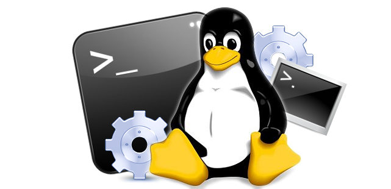

¿Qué es git?
Git es un sistema de control de versiones distribuido de código abierto que se utiliza para administrar el código fuente de proyectos de software. Fue desarrollado por Linus Torvalds en 2005 y se ha convertido en una de las herramientas de control de versiones más populares en el mundo del desarrollo de software.
Git se utiliza para rastrear los cambios en el código fuente de un proyecto y permite a los desarrolladores trabajar juntos en el mismo código base sin tener conflictos en las versiones. Además, ofrece la posibilidad de crear ramas de desarrollo paralelas, revertir cambios y fusionar las modificaciones realizadas por varios desarrolladores en una sola versión.
Git se puede utilizar desde la línea de comandos o a través de herramientas gráficas, y su funcionamiento se basa en la creación de un repositorio local donde se almacena el historial de cambios. A medida que los desarrolladores realizan cambios en el código, pueden hacer "commits" para registrar las modificaciones y añadir comentarios para explicar qué cambios se han realizado. Luego, estos cambios se pueden sincronizar con un repositorio remoto para compartir el trabajo con otros desarrolladores o para hacer copias de seguridad del código.

¿Cómo funciona git?
- Repositorio: es un lugar donde se almacenan los archivos de tu proyecto y donde se guardan las diferentes versiones del mismo. Puede ser local (en tu propio ordenador) o remoto (en un servidor externo, como GitHub).
- Commits: son las diferentes versiones de tus archivos que guardas en el repositorio. Cada commit tiene un mensaje que describe los cambios que se han hecho.
- Ramas: son diferentes versiones paralelas de tu proyecto. Te permiten trabajar en diferentes características de tu proyecto sin afectar la rama principal o master.
- Push: es la acción de enviar tus cambios locales al repositorio remoto.
- Pull: es la acción de descargar los cambios que otros han hecho en el repositorio remoto.
- Merge: es la acción de combinar los cambios de diferentes ramas en una sola.
¿Cuando y quién creo git?

Git fue creado en el año 2005 por Linus Torvalds, el mismo creador del sistema operativo Linux. El desarrollo de Git fue motivado por la necesidad de tener un sistema de control de versiones distribuido y eficiente para el desarrollo del kernel de Linux, el cual había crecido en complejidad y tamaño a lo largo del tiempo. Desde entonces, Git se ha convertido en uno de los sistemas de control de versiones más populares y ampliamente utilizados en la industria del software.
¿Cuál es la version actual?
La versión actual de Git es la 2.31.1, la cual fue lanzada el 1 de marzo de 2021.